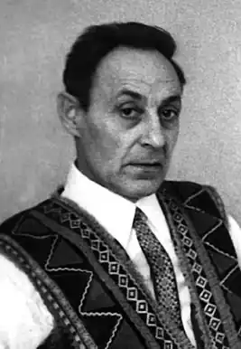

Грицько Бойко ввійшов у літературу для дітей на початку 50-х років XX ст. і дуже швидко полюбився маленьким читачам. Лише в Україні за життя поета вийшло понад п'ятдесят книжок. Смішинки про малят і звірят, шкільні й спортивні веселинки, скоромовки-спотиканки, загадки адресовані тим, хто цінує гостре, влучне слово, любить і розуміє гумор, уміє покепкувати не тільки з когось, а й із себе самого.
Григорій Пилипович Бойко народився на Донеччині. Декілька поколінь Бойків, як згадує його син Вадим, уміли говорити віршами. Дід по материнській лінії, Олексій Корнієцький, залишив по собі кілька десятків пісень, які ще й досі співають у селах Донеччини. А батько поета, Пилип Бойко, теж писав вірші. Щоби видати їх, односельці зібрали гроші і відрядили секретаря місцевої комсомольської організації аж до Москви. І вийшла збірка "Чайка" українською мовою, але тодішня влада виплатила авторові гонорар... бібліотекою, 2000 невеликого формату книжок, які читало все рідне село Оленівка. Пилипа Бойка відправили на науку до Харкова, де він провчився лише рік, але встиг здружитися з однокурсником Володимиром Сосюрою...
Після закінчення семирічки Григорій Бойко навчався в Оленівській рудниковій школі. Відстань до школи була чимала, тому доводилося хлопцеві щодня вставати о четвертій годині, кілька кілометрів іти пішки до станції, а вже звідти їхати робочим поїздом до школи. Почалася війна. Ще юнаком зі шкільної парти пішов Григорій на фронт, а повернувся звідти тяжко пораненим. Після війни майбутній письменник навчався на літературному факультеті Донецького педінституту. Початком своєї літературної діяльності Григорій Пилипович вважав 1950 рік: саме тоді вийшла його перша збірка віршів "Моя Донеччина". Але друкуватися він почав ще школярем. З мізерних гонорарів купував для сім'ї бодай якісь крупи і цим дуже пишався. Ще студентом видав першу книжку, і його одразу ж прийняли до Спілки письменників. Потім було ще кілька ліричних збірок. А згодом поет став писати виключно для дітей. У дитячій літературі не знайдеться, напевне, жанру, в якому б не працював Грицько Бойко: поеми, вірші, скоромовки, лічилки, загадки, п'єси-казки, тобто все, що подобається таким чарівним жителям країни Дитинства. Письменник видав близько ста книжок для дітей. Ще за життя наклад його книжок сягав двадцяти мільйонів. Особливо полюбилися малечі "Билиці дяді Гриця", "Про дідуся Тараса", "Смішинки", "Хлопчик Ох", "Ніс у сметані", "Шпаргалка-виручалка" та інші. А ще на слова поета створено понад чотириста пісень, здебільшого для дітей. Збірник пісень на слова Г. Бойка "Соловейко" побачив світ у 1974 році.